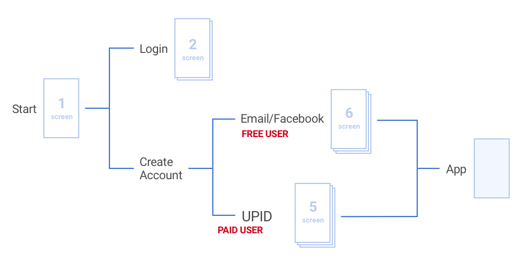

Noom
Whoops! This project is still progress. If you would like to learn about how I redesigned the in-app sign up fow and buy flow of the Noom Coach App, created scores of content illustrations and saw way too many Broadway shows (as if that's possible) please get in touch!
Background
Before I get into the nitty gritty of this project, there's a few details you'll need to know.
First, Noom has 2 core user groups, B2B and B2C users. B2B users are recommended to Noom programs by their healthcare/insurance providers and are automatically paid users. B2C users are individuals who access Noom directly, and can enter the app as free users or paid users. Free users always have the option of enrolling into a paid program.
Second, in order to enroll in a paid program, both B2B and B2C users need to input a Unique Program ID (UPID) sent to them when they initially enroll in a paid program.
Objective
The overall objective of this project was to improve the user experience for all users coming into the app with or without a UPID. The largest problems with the current flow in no particular order were:
- The signup is confusing Free users who are asking for a UPID.
- Users are downloading the app but not completing signup.
- New Users entering the program do not know what the program offers nor do they understand the paid programs.
- The signup is different on IOS/Android making collateral and support confusing for user onboarding.
On top of solving some of the problems with the current signup, the team also hoped to incorporate the newly designed buyflow (a second project I was running concurrently) into the signup flow.
Its important to note that improvements to the onboarding collateral and in-app onboarding were not within the scope of this project.
Current Flow
Upon analysis of the current signup, it was clear that the flow would require major changes to incoporate the necessary changes to address the problems with the current flow. While the journey itself appears very simple, it is filled with redundant input fields and screens which users indicated were frustrating.

The biggest issue with the current signup process was the initial account creating screen. This screen is where the signup flow experienced the largest drop off. I hypothesized that it was due to the confusing language and layout of this screen.
User Stories
Noom's projects use a set of user stories to guide design decisions, and as loose objectives in their design projects. These user stories outline tasks and objectives that users should be able to successfully complete/understand.
The user demographic for B2B users is very different from B2C users. Their age, interests, technical expertise are quite different, and this experience needed to be catered to both users.
Proposed User Flow
In order to address the problems with the current signup, the changed needed to occur at a process level. Specifically, the pathing of users through the signup process needed to be changed. Using the user stories, data requirements and technical constraints involved in this project, I proposed the following user flow.

At first glance this flow is much more complex, but it is designed to create an optimized experience for each user entering the app. It may also appear much longer, but this is due to the entrypoint to the buyflow directly in the signup flow. The main changes in this flow are with the location and method of separating free and paid users.
User Testing and Iteration
I created a high fidelity prototype based off of the new user flow. Since there are so many different users with different objectives accessing the app, it was important to do itertive testing of all the user scenarios. A total of 13 different user tests were conducted for:
- B2B user
- B2C free user
- B2C free user who purchases in the signup flow
- B2C paid user
- B2B/B2C user who already has an account
After each user tests, the results were consolidated and recommended changes implemented for the next round of testing. It was important during these tests to ensure that changing part of the designs from results from one test scenario would not affect the experience of a user from another test scenario.
Final Design
After consolidating all the test results and implementing the changes into the designs, the final visual design were created. This phase took a great deal longer that I originally expected since each input field needed a unique error state.
Final Design Specifications
For a closer look at this flow, you can go through the final tested prototype here. Note that the screens in the prototype have been intentionally cut off at the bottom. This was done so that during testing, the bottom of the screen containing the CTA did not fall below the fold. The biggest difference between the initially proposed new flow and the final product are in the three screens used to separate free and paid users.